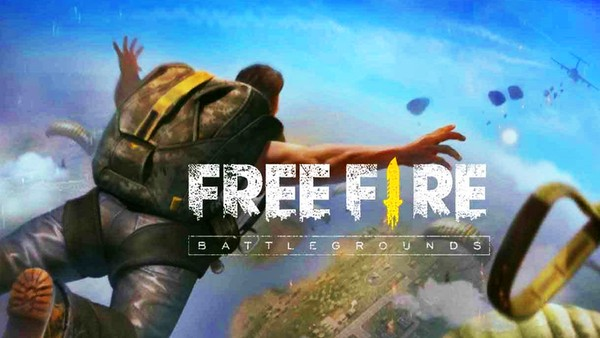
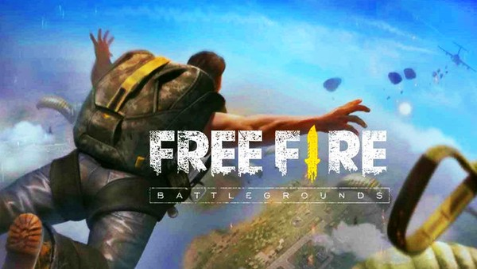

O evento foi organizado pela turma de informática do segundo ano, onde tinha um narrador (Luís Gustavo), uma pessoa que gravava a partida (Kelson) e, claro, os participantes, que eram compostos pelas turmas de DSI e informática do segundo uma parte do terceiro ano para poder completar os times.
 

Além desse campeonato de Brawl, ocorreu um campeonato - também - de Free Fire com uma disputa entre as turmas de DSI (1º ano) e de Informática (3º ano), onde teve vários destaques como o aluno que usava o codinome "socafofo".